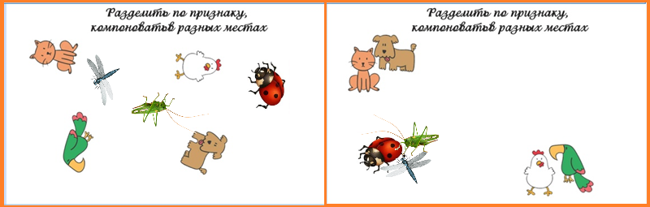

Описание задания
Разработать и реализовать на странице сайта перетаскивание объектов в зависимости от варианта задания. Библиотеки использовать нельзя. Страница расположена на сайте, а не на пустой страничке. Элементы для задания подбираете самостоятельно. Приветствуется отрисовка своих собственных фигур. Количество собираемых элементов не менее 4. Базовые фигуры должны быть повернуты. Реализуйте механизм поворота фигуры. Если картинка будет собрана правильно, то пользователь видит анимацию. Готовая картинка может располагаться в любом месте контента.
Вариант 3. Собрать животных по категориям.
